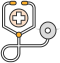

<div class="modal-content">
    <div class="modal-head">
        <p></p>
        <div class="head-dec ls-4">전국 최대 규모 - 8개 직영 센터운영(광화문, 여의도, 강남, 수원, 대구, 부산, 광주, 제주)<br />
            중요 질환 의심자발견의 탁월성으로 인한 3차 의료기관으로의 빠른 연계서비스<br />
            공기관, 삼성그룹, SK그룹, LG그룹, 금융기관 등 다수 기관의 검진 업체로 선정된 신뢰성 높은 기관입니다.</div>
        <a href="https://www.kmi.or.kr/index.web" class="homepage-move" target="_blank">홈페이지 바로가기</a>
    </div>
    <div class="modal-body">
        
        <h5 class="modal-content-title mt-25">혜택</h5>
        <ul class="benefit-list-col mt-10">
            <li>
                <figure></figure>
                <ul class="benefit-dec">
                    <li>1. 전국 KMI 센터에서 종합건강검진 예약 및 검진 시 예다함 회원 우대 수가 제공</li>
                    <li>2. KMI 센터 내원 시 연계 치과 치료를 우대 수가로 이용 가능</li>
                </ul>
            </li>
            

        </ul>
    </div>
</div>